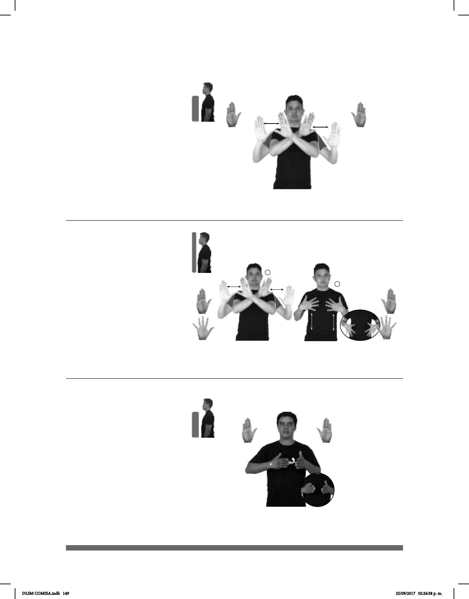

149
1
2
(B-P 115)
(B-P 116)
pro-YO NECESITAR PUERTAS PARA pos-MI CLÓSET
Necesito unas puertas para mi clóset.
pro-YO NECESITAR PUERTAS PARA pos-MI CLÓSET.
Necesito unas puertas para mi clóset.
Seña: SS
B-P.2
Palmas hacia afuera.
A la altura de los
hombros.
Las manos se cruzan
hacia el centro y después vuelven a
su posición inicial.
sust. m. Especie de
armario o ropero empotrado en la
pared; pequeño cuarto para guardar
cosas, especialmente ropa.
Seña: SC: I: SS; II. SS
I. B-P.2; II. 5.1
I. Palmas hacia afuera; II.
Palmas hacia adentro.
I. A la altura de los
hombros; II. Sobre el pecho y se
deslizan hacia la cintura.
I. Las manos se
cruzan hacia el centro y después
vuelven a su posición inicial; II. Recto
repetidamente.
sust. m. Especie de armario
o ropero empotrado en la pared;
pequeño cuarto para guardar cosas,
especialmente ropa.
1
2
(B-P 117)
pos-MI #TÍA DELICIOSO COCINAR
Mi tía cocina delicioso.
Seña: SB
MD y MB B-P.2
MD palma hacia adentro.
MB palma hacia la derecha.
MD y MB a la altura del
pecho.
La MD se mueve
repetidamente de atrás hacia
muñeca.
Simula atizar el fuego
con soplador.
1. v. tr. Preparar los
alimentos cociéndolos en el fuego. 2.
sust. f. Pieza o sitio de la casa en el cual
se guisa la comida.
DLSM COMISA.indb 149 25/09/2017 02:26:58 p. m.